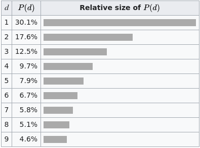
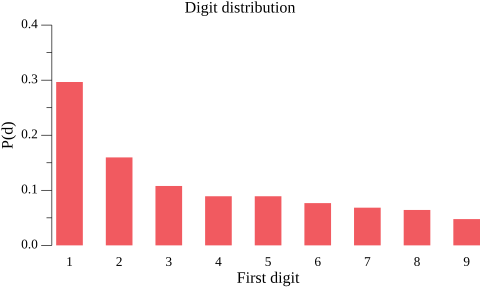
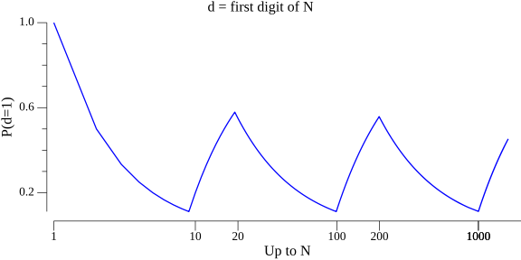

Benford's law is a really fascinating observation that in many real-life sets of numerical data, the first digit is most likely to be 1, and every digit d is more common than d+1. Here's a table of the probability distribution, from Wikipedia:
Now, the caveat "real-life data sets" is really important. Specifically, this only applies when the data spans several orders of magnitude. Clearly, if we're measuring the height in inches of some large group of adults, the overwhelming majority of data will lie between 50 and 85 inches, and won't follow Benford's law. Another aspect of real-life data is that it's non random; if we take a bunch of truly random numbers spanning several orders of magnitude, their leading digit won't follow Benford's law either.
In this short post I'll try to explain how I understand Benford's law, and why it intuitively makes sense. During the post I'll collect a set of clues, which will help get the intuition in place eventually. By the way, we've already encountered our first clues:
- Clue 1: Benford's law only works on real-life data.
- Clue 2: Benford's law isn't just about the digit 1; 2 is more common than 3, 3 is more common than 4 etc.
Real-world example
First, let's start with a real-world demonstration of the law in action. I found a data table of the populations of California's ~480 largest cities, and ran an analysis of the population number's leading digit [1]. Clearly, this is real-life data, and it also spans many orders of magnitude (from LA at 3.9 mln to Amador with 153 inhabitants). Indeed, Benford's law applies beautifully on this data:
Eyeballing the city population data, we'll notice something important but also totally intuitive: most cities are small. There are many more small cities than large ones. Out of the 480 cities in our data set, only 74 have population over 100k, for example.
The same is true of other real-world data sets; for example, if we take a snapshot of stock prices of S&P 500 companies at some historic point, the prices range from $1806 to $2, though 90% are under $182 and 65% are under $100.
- Clue 3: in real-world data distributed along many orders of magnitude, smaller data points are more common than larger data points.
Statistically, this is akin to saying that the data follows the Pareto distribution, of which the "80-20 rule" - known as the Pareto principle - is a special case. Another similar mathematical description (applied to discrete probability distributions) is Zipf's law.
Logarithmic scale
To reiterate, a lot of real-world data isn't really uniformly distributed. Rather, it follows a Pareto distribution where smaller numbers are more common. Here's a useful logarithmic scale borrowed from Wikipedia - this could be the X axis of any logarithmic plot:
In this image, smaller values get more "real estate" on the X axis, which is fair for our distribution if smaller numbers are more common than larger numbers. It should not be hard to convince yourself that every time we "drop a pin" on this scale, the chance of the leading digit being 1 is the highest. Another (related) way to look at it is - when smaller numbers are more common it takes a 100% percent increase to go from leading digit being 1 to it being 2, but only a 50% increase to go from 2 to 3, etc.
- Clue 4: on a logarithmic scale, the distance between numbers starting with 1s and numbers starting with 2s is bigger than the distance between numbers starting with 2s and numbers starting with 3s, and so on.
We can visualize this in another way; let's plot the ratio of numbers starting with 1 among all numbers up to some point. On the X axis we'll place N which means "in all numbers up to N", and on the Y axis we'll place the ratio of numbers i between 0 and N that start with 1:
Note that whenever some new order of magnitude is reached, the ratio starts to climb steadily until it reaches ~0.5 (because there are just as many numbers with D digits as numbers starting with 1 and followed by another D digits); it then starts falling until it reaches ~0.1 just before we flip to the next order of magnitude (because in all D-digit numbers, numbers starting with each digit are one tenth of the population). If we calculate the smoothed average of this graph over time, it ends up at about 0.3, which corresponds to Benford's law.
Summary
When I'm thinking of Benford's law, the observation that really brings it home for me is that "smaller numbers are more common than larger numbers" (this is clue 3). This property of many realistic data sets, along with an understanding of the logarithmic scale (the penultimate image above) is really all you need to intuitively grok Benford's law.
Benford's law is also famous for being scale-invariant (by typically applying regardless of the unit of measurement) and base-invariant (works in bases other than 10). Hopefully, this post makes it clear why these properties are expected to be true.
| [1] | All the (hacky Go) code and data required to generate the plots in this post is available on GitHub. |